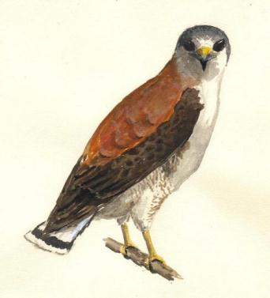

Día 2: Desde Pedro Luro hasta Comodoro Rivadavia (1.100 km.) Hoy dedicaríamos el día a cubrir distancia. Por suerte habíamos planificado para cada jornada de viaje un aliciente, un descanso, y hoy trataríamos de estar un par de horas en una playa. Había otros deleites también: hoy, al llegar a Sierra Grande, en la provincia de Río Negro, comenzaríamos a disfrutar uno de los más deliciosos placeres de la Patagonia: el de cargar nafta a mitad de precio – aún siendo que las distancias aquí son tan grandes que el tanque se consume a seco en muy pocas horas. Hoy se presentaría de nuevo ante nosotros esa llanura de olas gigantes, cubiertas de arbustos de ocre, gris y oliva: el paisaje patagónico: Indómito... Atrapante... Hoy cruzaríamos tres de los ríos más importantes que fluyen desde la cordillera. Cruzamos el primero, el río Colorado, a las 8:30, cuando apenas salimos de Pedro Luro. Según algunas definiciones, ya estábamos formalmente en la Patagonia, pero, para que el paisaje lo confirme del todo, quedaba por delante un tramo largo de ruta, flanqueado por campos cultivados y salpicado de montes naturales, hasta más allá de Viedma. Llegamos a Carmen de Patagones. Allí la Ruta 3 cruza el majestuoso río Negro por un enorme puente de pocos años de existencia. Desde el mismo, los techos de algunas casas se dejaban ver entre la densa arboleda que crecía con fuerza a los costados del curso, que también cubría una gran isla instalada en el medio del cauce. El camino nos había acostumbrado a un paisaje más polvoriento, y al ver estos verdes tan oscuros nos brotaba una sola palabra: ¡oásis! Y desde este puente, el anchísimo río que fluía lento, pero implacable, hacía honor a su nombre: sus aguas límpidas que invitaban a un baño refrescante se veían totalmente negras. Me pregunto por qué el cielo no se refleja en el río Negro… El camino ahora circulaba entre campos naturales, con espinillos, chañares y otros arbustos. Se observaban algunas bandadas de los grandes loros barranqueros, y cada tanto nos alertaba el fugaz paso de un par de alitas blancas y negras: ¿Fue una Monjita Blanca o una Monjita Coronada? ¡Que ganas tenía de detenerme para buscar aves en estos montes! Pero no había tiempo para todo - tal vez podría hacerlo en el viaje de vuelta… Al llegar al cruce con el camino que lleva al puerto de San Antonio Este doblamos hacia el mar. La costa estaba a 15 km., 14 km., 13 km.… Nos anticipamos poniéndonos crema para el sol, colgando los binoculares, y… eligiendo una amplia bolsita de plástico, adecuada para recibir el fruto de la primera colecta de caracoles en casi un año. Al llegar a la costa doblamos hacia el este por camino de ripio, y bordeamos el mar hasta llegar a una playa un tanto más alejada del pavimento. En la primera loma detrás de las playas, un custodio: nuestro primer Aguilucho Común, en gallarda pose. Parecía advertirnos que esta era tierra suya, y que si deseábamos usufructuar de ella, debíamos comportarnos según las normas de la Constitución Natural: nada de bochinche, nada de basura, nada de fuego…  Acuarela de Aguilucho Común (Buteo polyosoma) por A. Earnshaw (En base a fotos de Rodolfo Suarez) El mar estaba tan azul que parecía teñido. Pero una brisa fresca aconsejaba no bañarse hoy. Así que caminamos por la playa, buscando cangrejos, aves y caracoles. Vimos un grupito de chorlos que recorría la playa. Estaba conformado por cuatro especies diferentes: unos eran los “Doble Collar”, que con sus trajes de pecho barrado parecían un ejército de sobrinitos de aquel célebre personaje de caricatura: Clemente. Otras dos variedades eran casi indistinguibles entre sí, salvo por sus voces: el Playerito Rabadilla Blanca y el Unicolor, mientras que el cuarto era el Playerito Blanco, que no habíamos visto en años. Volvimos al auto. Luego de traspasar el arenoso, húmedo y “perfumado” contenido de mi bolsa con caracoles a un recipiente más duro - rito que habría de reiterar muchas veces en este viaje para evitar roturas de las valvas, muchas de ellas frágiles – volvimos al camino. Ahora había que manejar y manejar. El dulce del día ya estaba consumido. Y manejamos… Pasamos San Antonio Oeste y Sierra Grande. Más tarde, gracias a un brevísimo acercamiento que hace el camino al borde de la meseta, divisamos desde la altura, y solo por un instante, a la ciudad de Puerto Madryn. Siempre imponente, custodia el Golfo Nuevo bañado por el mismo mar pintado. En Trelew cruzamos otro río de gran importancia para la zona: el Chubut, que provee de agua potable a esta ciudad, a Rawson y a Madryn. Aquí adquirimos algo para comer en ruta, y seguimos manejando. Cualquiera puede llegar en auto hasta Trelew. Pero emprender los monótonos 400 km. hasta Comodoro Rivadavia requiere una cierta dosis de coraje, y un expreso deseo de aventura. Pero ni siguiera el entusiasmo que provocan estas emociones puede resistir un camino tan recto, a veces hasta aburrido, así que el conductor debe estar atento al riesgo más serio. ¡Sonámbulos abstenerse! En este tramo seríamos testigos de la desaparición del monte norpatagónico y el surgir de las estepas, aquellos pastizales secos que abarcan gran parte de la “Patagonia Sur”. El anochecer llegaría hoy bastante más tarde, y contábamos con este mágico efecto astronómico para compensar el tiempo que habíamos dedicado esta mañana para pasear por la playa. A casi 100 km. de Trelew hicimos una parada "de rigor": en esta zona bifurca un camino de ripio hacia el noroeste, y nos internamos por él unos 400 m. Aquí, hace cuatro años, habíamos visto la infrecuente Monjita Castaña. Y al llegar al alambrado la vimos nuevamente: una pareja. Se alejaron casi enseguida, pero las pudimos ver bien. Salimos del auto y por media hora recorrimos los arbustos, sin detectar más aves. Recién al final apareció una Diuca Común: tan común es en la Patagonia, y sin embargo no la volvimos a ver en todo el resto del viaje. A gran velocidad pasamos frente a lo que, hasta hace poco, era la tradicional y pintoresca estación de servicio de Uzcudún. La familia de este nombre que había instalado aquí una posta con surtidor en el medio de la nada, y lo había atendido por años afrontando vientos huracanados, evidentemente cedió ante el tentador ofrecimiento de una petrolera grande. El nuevo techado y los relucientes acrílicos con los colores de la marca empresaria le han robado a Uzcudún de aquella épica personalidad que la caracterizaba. Mientras descansaba de mi turno al volante observaba el veloz paso de una insólita alfombra natural, de increíbles colores, que crecía entre el pedregullo de la banquina, y sobre los costados más alejados. En algunos tramos había flores amarillas sobre tallos altos de frondosas hojas verdes. En otros había miles de flores bajas de color rosa. Y en otros, flores rastreras, amarillas y anaranjadas, de hojas verdosas y tallos rosados. No saqué fotos, pero en otro viaje prometo detenerme para registrar este espectacular jardín que se extiende gratuitamente a lo largo de cuatrocientos mil metros en ambas márgenes del camino. Pasamos cerca de varias lagunas de aguas ocre amarronadas. Son típicas de la región, ocupando los bajos que existen entre las sucesivas lomadas kilométricas. A la distancia, muchas se notaban salpicadas por nítidos puntitos rosados: eran los magníficos flamencos que se alimentaban allí. A veces, cuando los puntitos eran bien blancos, sabíamos que se trataba de cauquenes o de cisnes. Casi oscurecía cuando llegamos a Comodoro Rivadavia. La gran bajada, el mar, el puerto y las grandes construcciones constituían un notable contraste con la planicie infinita de la estepa con que la Ruta 3 nos venía hipnotizando, sin tregua, durante las últimas horas. Nunca habíamos pernoctado en “Comodoro”, como se le conoce a esta ciudad, y no habíamos previsto hotel. Pero confiábamos que la abundante oferta disponible iba a proporcionarnos un lugar adecuado. Nos pusimos en campaña leyendo los carteles en la ruta de acceso. Cruzamos la ciudad sin que se presente nada adecuado para investigar. Ya poco quedaba de urbanización: sólo parques industriales y playas de estacionamiento colmadas con toda suerte de equipamiento petrolero oxidado. Pero al final dimos con un hotel muy cómodo. Se llama “Hotel Su Estrella”, aunque, a decir por el gran cartel que da a la ruta, parecería llamarse “Hotel Parrilla”. Elegimos un departamento de 2 ambientes con baño, lujoso, limpio y espacioso. A pesar de sus numerosas habitaciones, el hotel tiene solamente 2 de éstos departamentos, a buen precio e ideales para familias que hacen este viaje al sur, así que es conveniente reservar con anticipación.
|